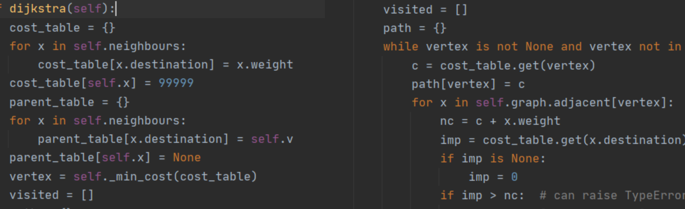

Made in Python with a linked-list implementation

This was a capstone project for my Algorithms and Data Structures project, earning me one of the highest grades in my class. It imlements Dijkstra's BST traversal algorithms and a BFS traversal method as well. All of the network nodes are displayed using networkx and matplotlib.
Ultimately, this capstone project was the result of more than a semester's worth of learning, and was a great lesson in implementing multiple data structures to compliment eachother. While consisting of over 250 lines of code, this Weighted Graph is still well optimized for time and complexity.
One of the main issues I had to overcome for this project was with connecting the data together with the visual component. I initially attempted my own solution, but later on decided to use networkx and matplotlib, as these were more effective and allowed greater user comprehension. A custom implementation of a queue here allows for only adding in the components which I know will be needed, which leads to reducing in overall complexity and processing time as well. This was a great excersize in using recursion and creating code which a different individual would be able to understand, which is crucial in team-based environments.
The source code for this project is available for viewing on my BitBucket directory under "Intro to AaDS".